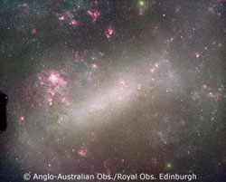
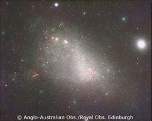

An irregular galaxy is the catchall name given to any galaxy that does not neatly fit into one of the categories of the Hubble classification scheme. They have no defined shape nor structure and may have formed from collisions, close encounters with other galaxies or violent internal activity. They contain both old and young stars, significant amounts of gas and usually exhibit bright knots of star formation.
Due to the diversity of objects that fall into this category it is difficult to constrain sizes, masses and luminosities. Dwarf irregulars can be as small as 3 kiloparsecs and contain as little as 108 solar masses of material. At the other end of the scale, the larger irregulars can be up to 10 kiloparsecs across and contain 1010 solar masses of material. Their luminosities range from 107 to 109 solar, making them generally fainter than spiral galaxies.
The best known examples of irregular galaxies are the Small and Large Magellanic clouds. These are companion galaxies to our own Milky Way, and can be easily seen at dark sites in the Southern Hemisphere.
|

Credit: AAO/Royal Obs. Edinburgh/David Malin
|

Credit: AAO/Royal Obs. Edinburgh/David Malin
|
| The Large (left) and Small (right) Magellanic clouds are prime examples of irregular galaxies. | |